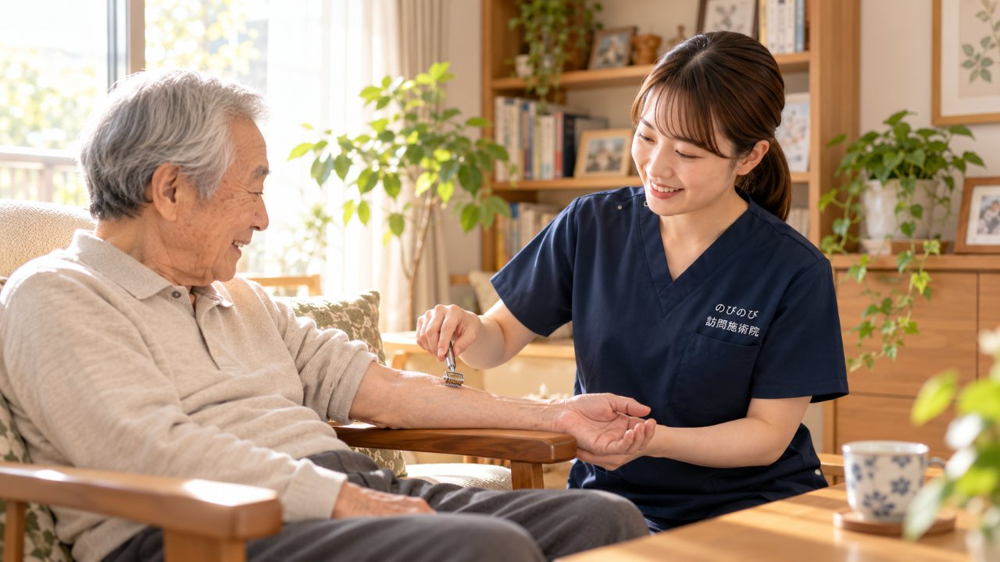

足先がいつも冷たくて布団に入っても温まらない。手足のしびれで夜中に目が覚める。手足のしびれや冷えは高齢の方に多く、それでいて人には言いにくい悩みです。「年のせいだから」と我慢を続ける方もめずらしくありません。ただ、しびれには医師の診断が先になる原因も隠れています。この記事では、受診の目安を先にお伝えしたうえで、鍼灸や手技でできること、保険と料金、自宅で受ける利点を、施術の現場からお話しします。
この記事のポイント
手足のしびれ・冷えでお困りの方は、訪問鍼灸マッサージで筋肉のこわばりを和らげ、血のめぐりを促すケアを受けられます。医師の同意書があれば、はり・きゅうの医療保険が使え、自己負担は1回総額3,950円のうち負担割合分だけ。1割で約395円です。国家資格を持つ施術者が自宅へ伺うので、外に出ずに続けられます。ただし、しびれは脳や神経、血管の病気が背景のこともあり、鍼灸より先に医師の診断が要る場合があります。まずは受診の目安を確かめてください。
手足のしびれ・冷えは、どこから来るのか
ひとくちにしびれと言っても、出どころはさまざまです。腰や首から手足へ伸びる神経が圧迫されてジンジンすることもあれば、末梢の血のめぐりが滞って指先やつま先が冷えることもあります。糖尿病が背景にあって、足先の感覚が鈍くなっている場合もあります。正座のあとのような、あのジンジンした感じ。それが夜や明け方に強くなる、という訴えもよく聞きます。
加齢で筋肉が落ち、体を動かす機会が減ると、めぐりはいっそう滞ります。冷えるとめぐりが落ち、めぐりが落ちるとしびれや不快感が増し、それがまた動くのをためらわせる。この悪循環が夜の眠りをさまたげ、外へ出る気力まで削っていきます。そのため、体を温め、こわばりをゆるめ、めぐりを促すケアが助けになります。ただ、その前に確かめておきたいことがあります。
鍼灸より先に、医師の診断が要ることがあります
これは強くお伝えしておきます。しびれの奥には、脳梗塞や末梢動脈の病気など、医療機関での診断と治療が先になる原因が隠れていることがあります。急に片側の手足だけがしびれる、力が入らない、ろれつが回らない、顔がゆがむ。こうしたときは、ためらわず救急への連絡を考えてください。時間の勝負になることがあります。
ゆっくりでも見過ごせない兆しもあります。しびれが日に日に強くなっていく、少しずつ範囲が広がる、片方の足だけ極端に冷たく色が悪い、歩くとふくらはぎが痛んで休むと治まる。糖尿病のある方で、足に傷やしびれの変化が出たときも同じです。まず医師に診てもらってください。鍼やお灸は、原因そのものを治す医療の代わりにはなりません。診断で慢性のしびれや神経痛とわかり、その緩和のケアとして進める。これが安全な順番です。
鍼灸・手技にできること、できないこと
医師の診断を経たうえでなら、鍼やお灸、体をほぐす手技は、こわばった筋肉をゆるめ、めぐりを促し、冷えを和らげる補助として役立ちます。とくにお灸は、じんわりした温かさが手足の末端までしみわたるので、冷えの強い方になじみます。神経に負担をかけている筋肉の張りがゆるむと、しびれに伴う重だるさが楽になる方もいます。
ただ、これらが原因を治す治療でないことは、はっきりさせておきます。脳や血管、神経の病気そのものに効くわけではありません。あらわれ方には個人差があり、変わっていく方もいれば、そうでない方もいます。伺ったその日は、手足の末端の温かさ、皮膚の色、左右の温度差、腰や首から手足にかけての張りを手で確かめてから始めます。冷えが前に出ている方、しびれが中心の方、両方が混ざった方と、状態は一人ひとり違うからです。毎回じかに触れているぶん、気になる変化に気づけば、受診をお勧めすることもあります。
保険と料金、同意書のこと
訪問鍼灸マッサージは、しびれを伴う神経痛などについて医師が施術の必要を認めれば、はり・きゅうの医療保険で受けられます。要介護認定はいりません。費用は1回の施術で総額3,950円。そのうち負担割合の分だけをお支払いいただくので、1割の方で1回およそ395円です。週2回続けても、ひと月およそ3,160円（1割）ほど。特別な割引ではなく、公的な医療保険にもとづく正規の料金です。
この費用は介護保険の区分支給限度額とは別枠なので、デイサービスやヘルパーで枠を使っていても、それとは別に組み込めます。出張費や交通費は別にかからず、エリア内はどこでも同額です。手足を動かしてめぐりを促す機能訓練も施術に含み、追加の料金はいりません。お支払いは月ごとにまとめていただき、その月の施術内容がわかる明細をお渡しします。保険を使うにはかかりつけ医の同意書が必要ですが、その手続きはのびのびがお手伝いします。ご家族が病院との書類のやりとりに追われることはありません。まだ受診していなければ、医師に診てもらうところからご案内します。
寒い日に、家から出なくていい
しびれや冷えがあると、外へ出ること自体が負担になります。足元が不安、長くは歩けない、寒い時期はなおのことつらい。自宅で受けられれば、その行き帰りを丸ごと省けるので、ケアを続けやすくなります。国家資格を持つはり師・きゅう師が伺い、寝たまま、座ったままでも受けられます。部屋の温度やふだんの過ごし方が見えるぶん、その方に合った温め方もお伝えしやすくなります。
季節の変わり目で症状が波打つ方は、「秋の寒暖差で肩こり・冷えがつらい方へ」もあわせてご覧ください。気温差が自律神経にどう響くのかを整理しています。
ペースは週1回から3回ほど、1回はおおむね20分から30分です。その日のしびれと冷えの具合を確かめ、鍼・お灸・手技・機能訓練を組み合わせます。冷えやしびれは、続けるうちに少しずつ変わっていくことが多いので、あせらず地道に重ねます。施術のたびにようすを記録し、必要に応じて主治医やケアマネジャーにも共有します。良くなってきたら、こちらから間隔をあける提案もします。
家でできる温め方と、我慢しないという選び方
施術のない日の小さな心がけも、冷えとしびれのケアを支えます。湯たんぽや厚手の靴下で末端を温める。痛くない範囲で手足を動かす。温かいものをとって、体の中からも温める。訪問のたびに、その方に合ったやり方をお伝えするので、ご家族も一緒に取り組めます。
「しびれくらいで大げさかな」「冷えは体質だから」と我慢しているうちに、動かない時間が増え、めぐりがますます滞ることがあります。人に相談しづらい悩みだからこそ、一人で抱え込まないでいただきたいのです。気になる症状があれば、まず医師の診断を。そのうえで日々のケアが要るようなら、一度声をかけてください。
訪問先でうかがったお話
冷房を除湿運転に変えてみた方から、「しびれがちょっとマシになったんです」「喉の調子、わりかしマシになったし、冷えもマシになった」というお話がありました。ご本人が感じておられることで、季節や室温、その日の体調などが重なって感じ方は変わりますが、冷えやしびれは暮らしの中の小さな条件で変わることがあります。施術では足先の温度や左右の差を毎回確かめながら、お部屋の環境で工夫できそうなことも一緒に考えています。
よくある質問
手足のしびれや冷えは鍼灸で楽になりますか？
背景に筋肉のこわばりや血のめぐりの悪さが関わる場合、はり・お灸・手技でめぐりを促し、冷えやしびれに伴う不快感が和らぐ方がいます。ただし原因を治すものではなく、あらわれ方には個人差があります。まずは主治医に診てもらったうえで進めるのが安心です。
しびれや冷えでも保険で受けられますか？
慢性的なしびれを伴う神経痛などについて、医師が鍼やお灸での施術を必要と認め、通院がむずかしければ対象になる場合があります。医師の同意書があれば、はり・きゅうの医療保険が使えます。介護保険の支給限度額とは別枠です。
料金はいくらですか？交通費は別にかかりますか？
1回で総額3,950円、負担割合の分だけをお支払いいただきます。1割で約395円です。別途の出張費（出張料・交通費）はかからず、エリア内はどこでも同額です。お支払いは月ごとにまとめてお願いしています。
どんなときは鍼灸より先に病院へ行くべきですか？
急に片側の手足がしびれる、力が入らない、ろれつが回らない、顔がゆがむといったときは、すぐに救急への連絡を考えてください。しびれが急に広がる、片方の足だけ極端に冷たく色が悪いといったときも、まず医師の診断が先です。しびれは脳・神経・血管の病気が背景のこともあります。
糖尿病がありますが受けられますか？
受けられますが、足に傷やトラブルがあるときは先に医療機関へご相談ください。糖尿病が背景でしびれが出ていることもあるため、主治医と相談しながら、血糖や足の状態に配慮して進めます。
お灸は熱くないですか？
心地よいと感じる温かさに加減するので、熱いのを我慢して受けることはありません。じんわりとした温かさで、冷えの強い手足にもなじみやすく、リラックスして受けていただけます。
寝たきりや、外出がむずかしい状態でも受けられますか？
はい。国家資格を持つ施術者が自宅へ伺い、寝たまま・座ったままでも受けられます。通院の行き帰りがなくなるので、しびれや冷えで外出がつらい方も続けやすくなります。
どのくらいの頻度で来てもらえますか？
体の状態やご希望に合わせ、週1回から3回くらいで調整します。1回はおおむね20分から30分です。定期的に同じ曜日・時間で伺うことが多く、暮らしのリズムに組み込みやすいです。良くなってきたら間隔をあける提案もします。